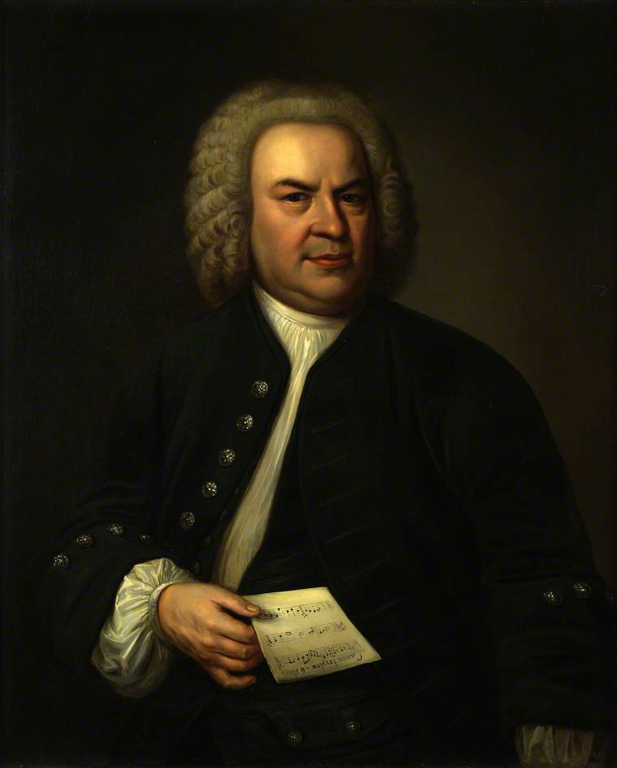

Johann Sebastian Bach

Orgue d'église
vidéo montrant un orgue d'église, le type d'instrument sur lequel Bach composait
la video n'est pas pris en charge par votre navigateur!
Extrait sonore d'une composition
extrait sonore d'une composition
Présentation de la partition du motet BWV 277 -
Jesu, meine Freude
Article wikipédia du compositeur